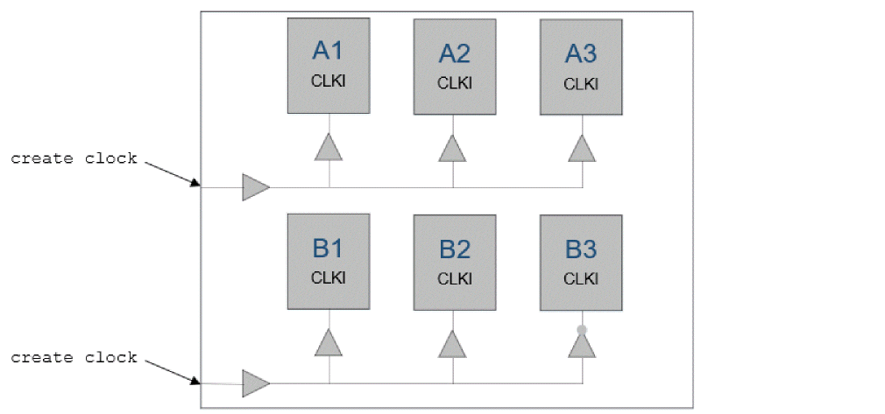

MIM Flow Examples
Example 1: The following example illustrates how to read and write Timing Context for reg-reg analysis of MIM modules.
Consider a top-level design with two modules -
- Module A with 3 instances A1, A2 and A3 - all belong to single cluster
-
Module B with 3 instances B1, B2 and B3 - B1/B2 belong to one cluster, B3 belong to another cluster.

- Writing Timing Context from Top STA
Below command will write the context data for all the instances - A1, A2, A3, B1, B2, B3 in a single step.
write_timing_context context.db -module {A B}
You have the flexibility to perform Context timing analysis for single or multiple instances of the modules using same Timing Context.
-
Block A STA with Timing Context
The following reg-reg timing analysis can be performed for module A using the generated context.db-
Block Context Analysis for instance A1 only -
read_timing_context context.db -instances A1 -
Block Context Analysis for instance A2 only -
read_timing_context context.db -instances A2 -
Block Context Analysis for instance A3 only -
read_timing_context context.db -instances A3 -
Block MIM Context Analysis for instances A1 & A2 -
read_timing_context context.db -instances {A1 A2} -
Block MIM Context Analysis for instances A2 & A3 -
read_timing_context context.db -instances {A2 A3} -
Block MIM Context Analysis for instances A3 & A1 -
read_timing_context context.db -instances {A3 A1} -
Block MIM Context Analysis for instances A1, A2 & A3 -
read_timing_context context.db -instances {A1 A2 A3}
or
read_timing_context context.db
-
Block Context Analysis for instance A1 only -
-
Block B STA with Timing Context
The following reg-reg timing analysis can be performed for module B using the generated context.db-
Block Context Analysis for instance B1 only -
read_timing_context context.db -instances B1 -
Block Context Analysis for instance B2 only -
read_timing_context context.db -instances B2 -
Block Context Analysis for instance B3 only -
read_timing_context context.db -instances B3 -
Block MIM Context Analysis for instances B1 & B2 -
read_timing_context context.db -instances {B1 B2}
-
Block Context Analysis for instance B1 only -
Example 2: This example illustrates how to read and write Timing Context for selected instances of design mentioned in example1.
-
Writing Timing Context from Top STA
Context generated for selected instances if blocks A and B. Examples - -
Block A STA with Timing Context
The following timing analysis (reg-reg + IO) can be performed for module A using the above generated context. -
Block B STA with Timing Context
The following timing analysis (reg-reg + IO) can be performed for module B using the above generated context.
Example 3: This example illustrates the incorrect use of write_timing_context and read_timing_context commands for the design mentioned in example1.
The following context reading commands will error out because B3 is in a different cluster that B1 and B2-
The following context writing commands will error out because module names of all the instances provided with -instance option are not specified under -module option
Return to top